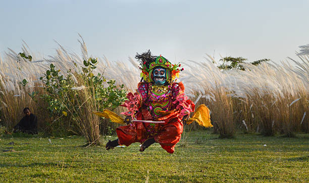

ChhauA Majestic Martial Dance Form from Eastern India |
|  |
About Chhau:Chhau is a traditional martial dance form originating from the eastern states of India, including Odisha, Jharkhand, and West Bengal. It is a highly energetic performance that combines elements of martial arts, acrobatics, and storytelling. The dance is known for its elaborate masks and vibrant costumes, often depicting mythical characters and legends. |